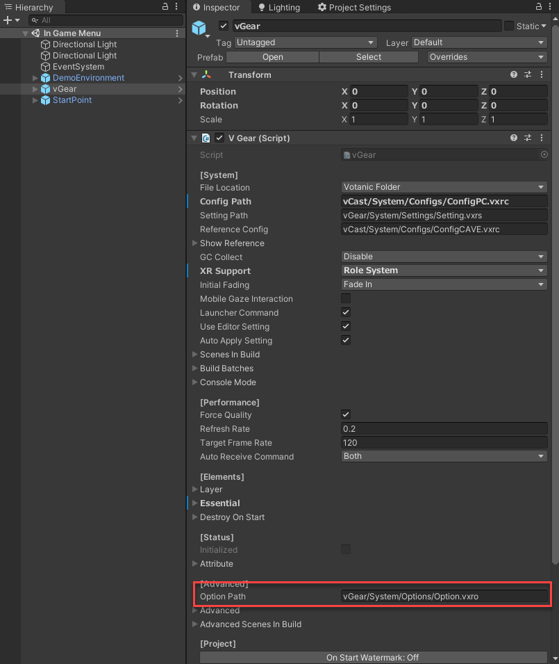
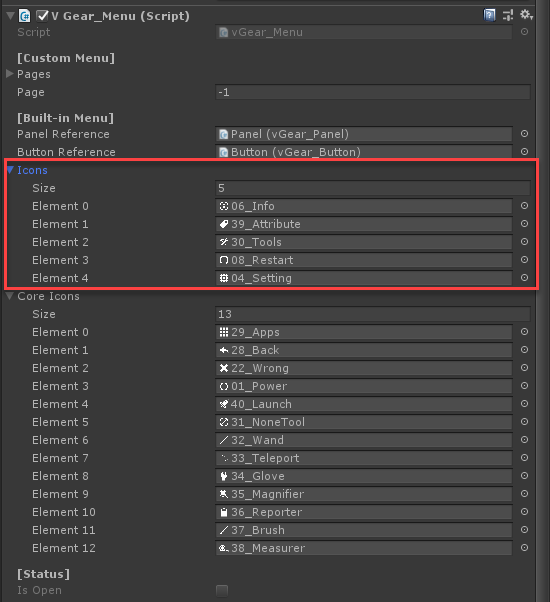
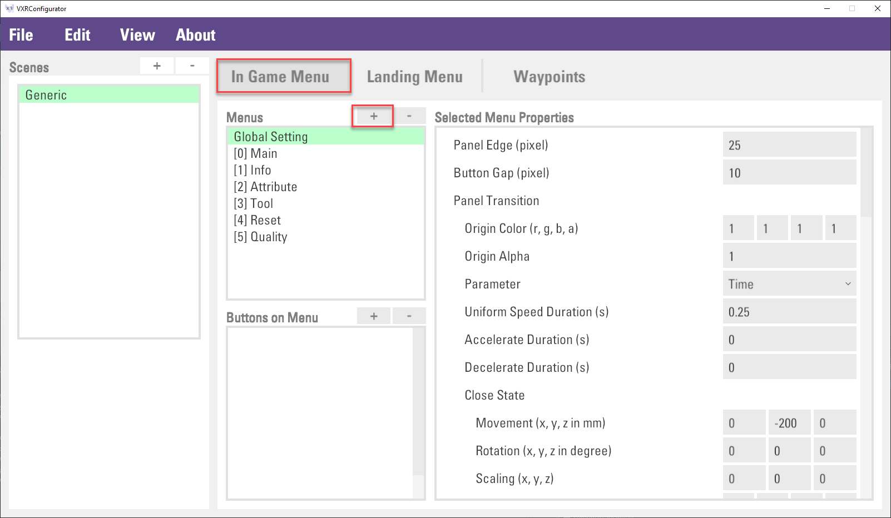
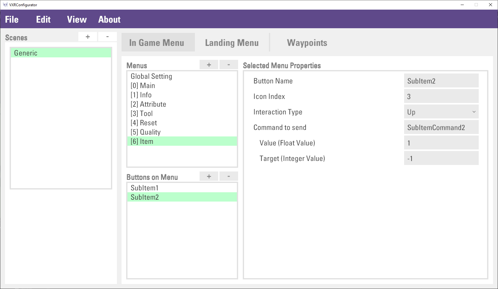
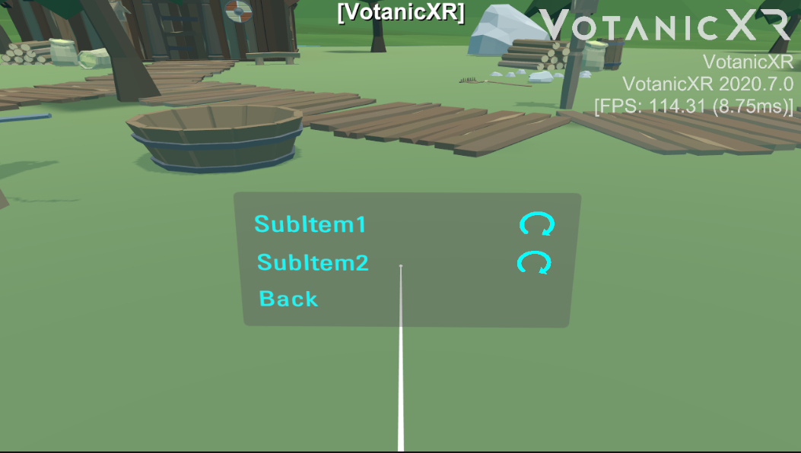
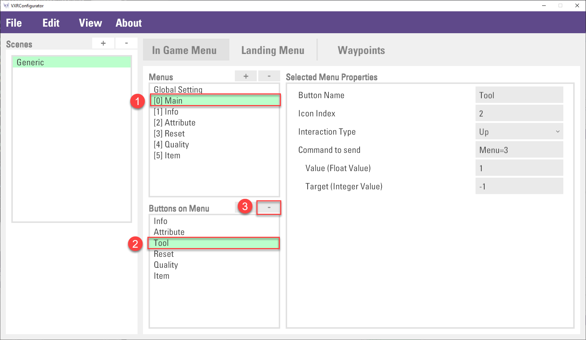
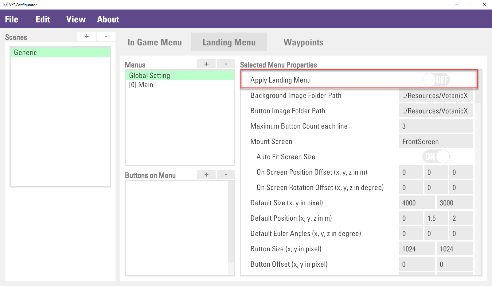
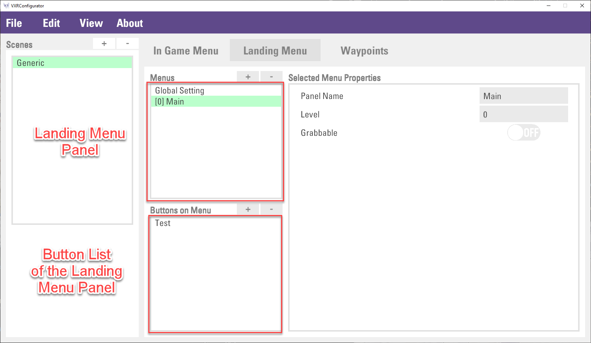
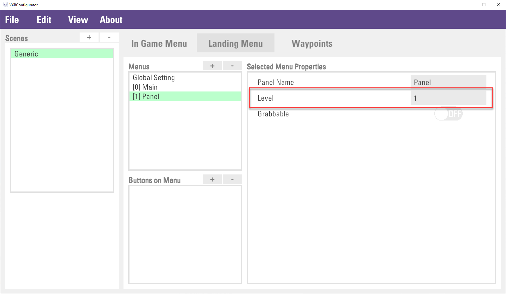
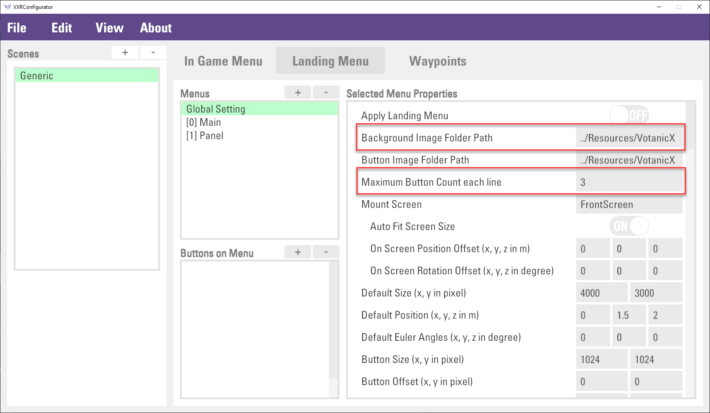

Using In-Game and Landing Menu
Every VotanicXR application has an in-game and landing menu built-in. The in-game menus can be used for two purposes: 1. it provides quick access to different built-in features of VotanicXR; and 2. it is a convenient way for developers to add UI elements to invoke different commands during runtime without needing to create your own 3D UI. The in-game menu is fully customizable in terms of its menu-items and the visual effects.
In addition, VotanicXR also provides a built-in landing menu for developer to quickly create a menu for the VotanicXR application. In runtime, the landing menu will show in front of the user when the application starts. It can be used for displaying welcome message, or to faciliate scene or level selection on application starts. The landing menu is also customizable in terms of background and button images.
This chapter introduces the In-Game and Landing Menu features, the basic usages, and the configuration.
Tutorial Scene and Related Materials
Go to Assets > Votanic > VotanicXR_Tutorial > Tutorial09_InGameMenu and open the scene In Game Menu provided.
In-Game Menu
Basic usage of In-Game Menu
In the application, the in-game menu can be opened using both the keyboard or controller.
Keyboard: holding key 3 and then press M
Controller: press and hold menu button for 1 second (check this for controller button mapping)

The in-game menu consists of two components, the menu panel, and the button of the menu panel. The menu panel is a container that holds a list of buttons in which each of the button invokes an action, for example, open another menu panel or other actions.
In the below example, the figure at the top shows the Main (root) menu panel, and it contains 8 buttons. The New Page button in Main menu panel will open the New Page menu panel. The figure at the bottom shows the New Page menu panel, it has 3 buttons inside.
The default in-game menu panel includes Info, Attribute, Tool, Reset, Quality and Apps.
Infomanages the in-game information provided by VotanicXR, such as message, fps display and log displaying.Attributemanages the vGear attributes, including the Traveler Mode, Soul Mode, Debug Mode, Tracking, Stereo and Test3D.Toolmanages the in-game tools, details will be covered in the In-Game Tools chapter.Qualitymanages the common quality settings of the application, such as anisotropic, anti-aliasing, shadows and shadow resolution.Appsmanages the current application, such as quit the current application.
The below table summarized details of the menu panel, level, and its related buttons. The level is the menu hierarchy of the menu panel. The Main menu panel is the root of the menu, so the level is 0 and cannot be changed. The level 1 menu panel is opened from the Main menu panel, etc.
| Menu Panel | Level | Menu Button | Description |
| Main | 0 | Info | Open the Info menu panel |
| Attribute | Open the Attribute menu panel | ||
| Tool | Open the Tool menu panel | ||
| Reset | Open the Reset menu panel | ||
| Quality | Open the Quality menu panel | ||
| App | Open the App menu panel | ||
| Info | 1 | Message | To show or hide all messages on the InfoWall, including log info, debug info, and fps info. |
| FPS | To show or hide FPS info on the InfoWall. | ||
| DebugLog | To show or hide VotanicXR system debug info and message logged by vGear.Info.DebugLog(message) | ||
| PrintLog | To show or hide log message by vGear.Info.Print(message) | ||
| Attribute | 1 | Traveler | To enable or disable the traveler mode |
| Soul | To enable or disable the soul mode | ||
| Debug | To enable or disable the debug mode | ||
| Tracking | To enable or disable tracking in the application | ||
| Stereo | To enable or disable the 2D or 3D mode | ||
| Test3D | To open the 3D stereoscopic effect diagnostic tool | ||
| Tool | 1 | Wand | To switch to using various built-in in-game tools. This will be discussed further in the In-game tools chapter. |
| Teleport | |||
| Glove | |||
| Magnifier | |||
| Report | |||
| Brush | |||
| Measurer | |||
| Reset | 1 | Scene | Restart the scene |
| Frame | Reset the vGear’s frame to the starting point | ||
| Users | Reset the user location to the starting point | ||
| DebugRotation | Depreciated | ||
| Quality | 1 | Anisotropic | To change the display quality setting of anisotropic, antialiasing, shadows type and shadow resolution. For details, please check Unity's Quality setting manual |
| Antialiasing | |||
| Shadows | |||
| ShadowRes | |||
| App | 1 | App shortcut if available |
Configuring In-Game Menu
The setting of the in-game menu is stored in the option.vxro file. By default, the Option.vxro file is in the Assets/Votanic/VotanicXR/vGear/System/Options directory and configured in vGear in the Option Path property shown below. If you move the file to other file locations, make sure to update the Option Path in the vGear setting.

The in-game menu can be modified using the VotanicXR Configurator.
Navigate to the
option.vxrolocation and double click to open the file with the VotanicXR Configurator.Click the
In Game MenutabIn the
In Game Menutab, theMenuslist is to configure the global setting and the menu panel. TheButtons on Menulist is to configure the menu buttons.
Click
Global Settingitem inMenus, menu properties can be changed inMenu Propertiesview on the right.Click
File > Saveto save the setting.
Customizing In-Game Menu
The in-game menu can be customized, for example, changing menu item icon, or adding a new in-game menu item.
Customizing Menu Item Icon
Go to
Assets > Votanic > VotanicXR > vGear > Materials > Prefabs > MenuPrefab, which is a prefab made with UI Elements and Input System. Double click the prefab to open and edit its contents.The menu prefab has the
V Gear_Menu (Script)component, which is responsible for managing various properties of the In-Game Menu. To use your own custom icons in the in-game menu, expand theIconslist under [Built-in Menu] and drag your own icon sprites into the list.
Adding In-Game Menu Item
In-Game Menu can be added using the VotanicXR Configurator. In general, there are three steps to add a new in-game menu.
Creating a new menu panel
Itemin the menu listThen, adding
SubItem1,SubItem2, andBackbuttons under theItemmenu panel, and set the button command.Finally, adding a
Itembutton in the Main menu panel and set the button command to openItemmenu panel.
The below tables summarized the Main and Item1 menu panel and buttons.
| Menu Panel Level=0 | Menu Button | Action / Description
| Main | Item | Open Item1 menu panel
| |
| Menu Panel Level=1 | Menu Button | Action / Description
| Item | SubItem1 | Send out the "SubItemCommand1" command
| SubItem2 | Send out the "SubItemCommand2" command
| Back | Back to top menu
| |
The below steps are to demonstrate how to use the VotanicXR configurator to create the menu panel.
Open the
option.vxrofile with the VotanicXR Configurator and go to theIn Game Menutab. Click+button in theMenuslist.
A
Panelitem will be added to theMenuslist. In theSelected Menu Properties, change the property as shown below.Note: The
Levelof a menu panel item determines the position of the menu panel when it displays in the VR world. The menu items are displayed in different levels so that the pixels will not overlap with each other when transitioning from the menu to menu of its subitem, and vice versa. If you have a menu item with several layers of menu subitems, be sure to set theLevelcorrectly to avoid the menu displaying with overlapping pixels.Click
+button next to theButtons on Menuto create sub items. Input the property details as shown in the below figure:Note: The
Icon Indexis the index of Icons element in the prefab of previous section. Icon index is -1 representing no icon, and index is -10i representing core icon with index ith stored in the prefab.Repeat step 3 to create buttons for
SubItem2andBack.
For the
Backbutton, inputMenu=0inCommand to sendproperty, this command means open the menu panel index 0. The menu panel index is the menu panel order in theMenuslist. The above figure illustrates how to count the menu panel index.Then, create a menu button
IteminMainmenu panel, and the button to open theItemmenu panel. First, select theMainmenu panel inMenus. Second, click the+button which near theButtons on Menulist. Third, inputItemandMenu=6inButton NameandCommand to sendproperty correspondingly.Note: Command
Menu=6means open the menu panel index 6. Please check the previous step to check the index number.Finally, click
File > Saveto save the setting.Play the scene and check the result. The command can be received by using vGear.Cmd.Received(command) or vGear.Cmd.AllReceived(), which is described in the Input System Section.

Removing In-Game Menu Item
The menu panel can be deleted. However, the menu panel index will be changed if you delete a menu panel that is not the last item in the Menus list, as a result, the button command inside the Main menu panel are required to change as well.
Note: the "Main" menu panel cannot be deleted.
The below steps are to remove the Tool menu panel.
In the
Menuslist, select theToolitem and click the-button.Then, select the
Mainitem in theMenuslist, and selectToolin theButtons on Menulist, finally, click the-button to remove the button.
Then, update the
Command to sendproperty inResetandQualitybutton. It is because the menu panel index has changed. The command should be changed fromMenu=4andMenu=5toMenu=3andMenu=4accordingly.Finally, click
File > Saveto save the configuration.
Landing Menu
The landing menu is a large menu panel that will show in front of the user when the application start. The below figure shows a default view of the landing menu.

Basic usage of Landing Menu
The configuration of the landing menu mainly relies on the VotanicXR Configurator. The landing menu settings are stored in the option.vxro file. You can open this file via the VotanicXR Configurator, and then select Landing Menu tab.
To enable the landing menu, it is simple to enable the landing menu by turning on the Apply Landing Menu property in global setting, and then save the setting. A default landing menu will be shown when the application starts.

Configuring Landing Menu
The landing menu, just like the in-game menu, consists of the menu panel and the button of the menu panel. Those menu panel and button can be added and configured in the Configurator. The below figure shows the landing menu panel and the button list of the landing menu panel.

Creating Landing Menu Panel
The default Main menu, same as in-game menu, is the root of landing menu to open. If multiple landing menus are created. It is required to follow its hierarchy to setup the Level property. For example, if there is another landing menu, called Page1 which is got into from the Main menu, the Level property of the Page1 should be set to 1.

The background of the Landing menu is configured in the Global Setting > Background Image Folder Path. This property is to input the folder path. Images in the designated folder will be loaded and matched to the landing menu panel in alphabetical order according to the image list sequence and landing menu panel index. Otherwise, a default background image (the checkbox image) will be applied.
For example, if the image folder contains two images, image1.jpg and image2.jpg. in the below figure, image1.jpg and image2.jpg will be used in Main and Page1 landing menu panel correspondingly.
Creating Landing Menu Button
It is possible to add buttons to the landing menus to perform different functions, for example, as a level selector. The configuration of the buttons is similar to that of the in-game menu, and you can define Command for the button action. The landing menu has built-in two command for closing the landing menu and switching the landing menu.
| Command | Description
| Landing=Close | Close the landing menu
| Landing=[menuPanelIndex] | Open menu panel by index | eg. Landing=0, open the `Main` landing menu panel |
The button images and no. of buttons per line can be configured in Global Setting.
Button Image Folder Path defines the folder for the images shown on the list of buttons. Images in the designated folder will be loaded and matched to the button images in alphabetical order according to the image list sequence and button index sequence. Otherwise, a default button image will be applied.
Maximum Button Count each line defines the number of buttons per row, buttons will be displayed on the next row if it exceeded the limit.
